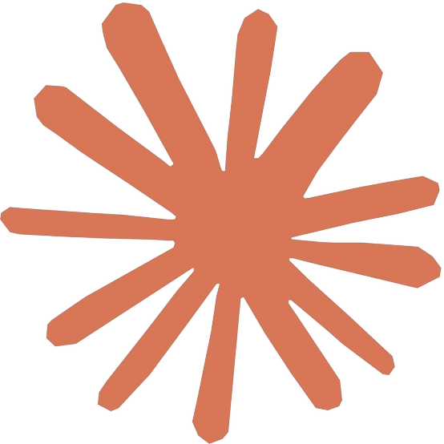
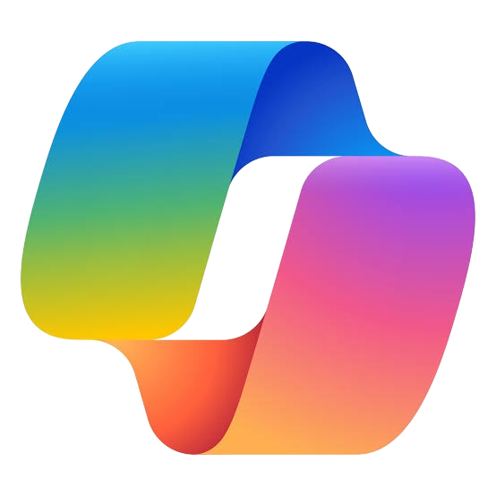

رحلة داخل عالم الذكاء الاصطناعي
01/05
THE NEXT GENERATION OF TECHNOLOGY
الذكاء الاصطناعي
التوليدي
GENERATIVE AI
من فكرة بسيطة إلى نص وصورة وكود… تعرّف على التقنية التي تعيد تشكيل طريقة تعلّمنا وعملنا وإبداعنا.
5 PAGES · 4 AI TOOLS
اكتشف الأدوات، وافهم الفرق، واختر ما يناسبك.
THINK · CREATE
HUMAN × AI
✦✧
01 / INTRODUCTIONSCROLL LESS · DISCOVER MORE
TOOL 01 · AI ASSISTANT
تعرّف على ChatGPT
01/04
CHATGPT
الشركة المطوّرةOpenAI
ChatGPT هو مساعد ذكاء اصطناعي طوّرته شركة OpenAI، ويعتمد على نماذج لغوية قادرة على فهم الأسئلة والرد عليها بطريقة حوارية.
ماذا يمكنه أن يفعل؟ WHAT CAN IT DO?
✦كتابة النصوص وتلخيصها
⌘شرح الأفكار والمساعدة في التعلّم
⌁المساعدة في البرمجة وحل المشكلات
◈التعامل مع الصور والملفات والصوت حسب الإمكانيات المتاحة
معلومة سريعة يمكن استخدامه في الدراسة والعمل والإبداع، لكن يُفضّل مراجعة المعلومات المهمة قبل الاعتماد عليها.
زيارة الموقع ↗
TOOL 02 · AI ASSISTANT
تعرّف على Claude
02/04

CLAUDEالشركة المطوّرةAnthropic
Claude هو مساعد ذكاء اصطناعي من شركة Anthropic. صُمّم للمحادثة والمساعدة في التفكير والكتابة وتحليل المعلومات والتعامل مع المستندات.
ماذا يمكنه أن يفعل؟ WHAT CAN IT DO?
✦صياغة المحتوى وتحسين أسلوب الكتابة
⌘تلخيص وتحليل المستندات الطويلة
⌁المساعدة في كتابة الأكواد وفهمها
◈تنظيم الأفكار ومناقشة المشكلات المعقدة
معلومة سريعة تشتهر عائلة Claude بالتركيز على المساعدة المفيدة والموثوقة، مع اختلاف الإمكانيات حسب النموذج والخطة.
زيارة الموقع ↗
TOOL 03 · AI PRODUCTIVITY
تعرّف على Copilot
03/04

MICROSOFT COPILOTالشركة المطوّرةMicrosoft
Microsoft Copilot هو مساعد ذكاء اصطناعي من Microsoft، يساعد المستخدمين على البحث وإنشاء المحتوى وإنجاز المهام، ويتكامل في بعض نسخه مع خدمات وتطبيقات Microsoft.
ماذا يمكنه أن يفعل؟ WHAT CAN IT DO?
✦الإجابة عن الأسئلة والمساعدة في البحث
⌘إنشاء النصوص والأفكار والصور
⌁دعم الإنتاجية داخل تطبيقات Microsoft
◈تلخيص المحتوى وتنظيم المهام
معلومة سريعة تختلف خصائص Copilot حسب المنتج المستخدم؛ فهناك تجربة Copilot العامة ونسخ مدمجة في منتجات Microsoft 365 وغيرها.
زيارة الموقع ↗
TOOL 04 · AI MODEL
تعرّف على DeepSeek
04/04
DEEPSEEK
الشركة المطوّرةDeepSeek
DeepSeek هي شركة صينية تعمل على تطوير نماذج ذكاء اصطناعي، وتوفّر مساعدًا ذكيًا يمكنه إجراء المحادثات والمساعدة في مهام التفكير والبرمجة والكتابة.
ماذا يمكنه أن يفعل؟ WHAT CAN IT DO?
✦الإجابة عن الأسئلة وشرح الموضوعات
⌘المساعدة في البرمجة وتصحيح الأخطاء
⌁تحليل المسائل وتنظيم خطوات الحل
◈كتابة النصوص وتلخيص المعلومات
معلومة سريعة طوّرت الشركة نماذج متعددة، من بينها نماذج تركّز على الاستدلال والبرمجة، وتتغير قدراتها مع الإصدارات الجديدة.
زيارة الموقع ↗
THE FUTURE IS A PROMPT AWAY.شكراً لزيارتك